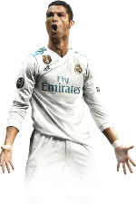
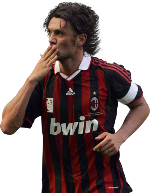
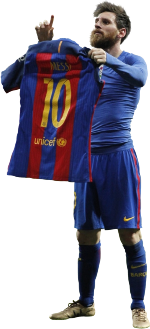

UEFA Champions League
Players
Most UCL wins :

- 5 Cristiano Ronaldo (Manchester United, Real Madrid)
- 5 Karim Benzema (Real Madrid)
- 5 Paolo Maldini (AC Milan)
- 5 Dani Carvajal (Real Madrid)

- 5 Luka Modrić (Real Madrid)
- 5 Gareth Bale (Real Madrid)
- 5 Casemiro (Real Madrid)
- 5 Isco (Real Madrid)
- 5 Toni Kroos (Real Madrid)
- 5 Marcelo (Real Madrid)
Most final appearances :


- 8 Francisco Gento (Real Madrid)
- 8 Paolo Maldini (AC Milan)
- 7 Alfredo di Stéfano (Real Madrid)
- 6 Cristiano Ronaldo (Manchester United, Real Madrid)
Most UCL Goals:

- 141 Cristiano Ronaldo (Manchester United, Real Madrid, Juventus, Sporting lisbon)
- 129 Leonel Messi (Barcelona, PSG)
- 91 Lewandowski (Borussia Dortmund , Bayern, Barcelona)
Most assists Goals:

- 141 Cristiano Ronaldo (Manchester United, Real Madrid, Juventus, Sporting lisbon)
- 129 Leonel Messi (Barcelona, PSG)
- 91 Di Maria (Borussia Dortmund , Bayern, Barcelona)